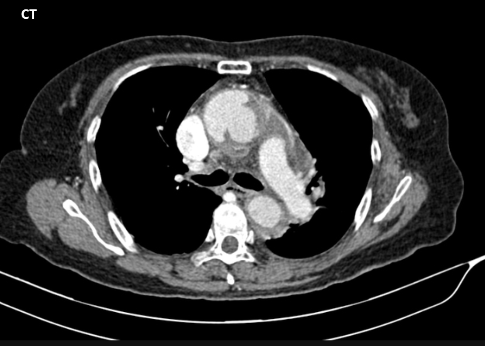
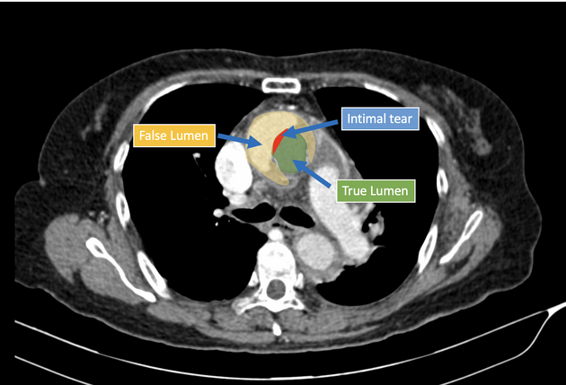

- EKG：請閱讀文字報告
- Echo：請閱讀文字報告
-
CXR
- 觀察心臟 enlarged cardiac silhouette：客觀衡量標準為測量 cardiothoracic ratio，當心臟的橫徑大於胸腔橫徑一半時，可以定義為 enlarged cardiac silhouette。如果和先前的 CXR 比較，會發現心臟明顯擴大。其原因可能是 cardiomegaly、pericardial effusion、anterior mediastinum mass、aortic aneurysm 等。
-
觀察肺臟
- 肺部是否對稱
- increase density（hyperdense）：須懷疑 pneumonia、lung cancer。前者容易整片肺葉變白；後者通常形成一小區。
- reduce density（hypodense）：須懷疑 pneumothorax，同時可能見到塌陷的肺、明顯的 pleural line、氣管偏移，且線外區域看不見 lung markings。
- 肺實質：觀察是否有 consolidation、ground glass opacity、mass 等變化
-
肋膜
- 肋膜若有增厚可能是 pleural effusion，同時也可以發現 Meniscus sign（積水液氣交界處的弧線彎曲）或是 costophrenic angle 消失；X ray 通常難以偵測到少於 250 mL 的 pleural effusion，此時就須要靠 CT
- 若發現肋膜塌陷、塌陷之外 hypodense 且看不到 lung markings 則須懷疑 pneumothorax。
- 此張 CXR 圖片中可以發現 cardiac silhouette 顯著增大，且有明顯的左肺 pleural effusion，可以看見 Meniscus sign、costophrenic angle 消失。

此張 CXR 圖片中可以發現 cardiac silhouette 顯著增大，且有明顯的左肺 pleural effusion，可以看見 Meniscus sign、costophrenic angle 消失。
-
CT：Introduction to CT Chest - Anatomy and Approach
-
觀察心臟
- 四腔室、瓣膜構造
- 心包：正常心包膜是圍繞在心臟腔室外薄薄一層，通常厚度約在 2 mm 以下；若發現心包膜增厚至 >3-4 mm，可能為 pericardial effusion，其原因可能是 pericarditis、hemopericardium 等。
- 觀察肺動脈：利用 CTPA（CT pulmonary angiogram），可以觀察是否發生 PE，關鍵在找出 thrombus（稱為 polo mint sign），橫斷面上可以發現 pulmonary artery 中央有 thrombus（暗，hypodense）、周圍包圍環狀顯影劑（亮，hyperdense）。
-
觀察升、降主動脈：檢查是否發生 aortic dissection、aortic
aneurysm。可以先定位降主動脈位置（由上往下貫穿身體、管徑圓），向上追溯到主動脈弓與升主動脈。根據
Stanford classification：
- type A：aortic dissection 涉及升主動脈，如果剝離位置靠近主動脈出口，當 aortic rupture 時血液容易滲漏到心包膜內，導致 cardiac tamponade。
- type B：aortic dissection 不涉及升主動脈。


-
觀察肺部
- 此圖顯示 pericardial fluid collection，若要判別心包膜積液為積水還是積血，可以在 CT 影像下確認積液密度，若 >35 HU 則為 hemopericardium。
- 可以發現患者已在 subxiphoid region 接上引流裝置。
- 患者雙側肺部可見氣液交界，為 pleural effusions 特徵。
- 雙側肺部亦可見 atelectatic changes。
-
觀察心臟